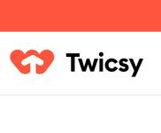

💎 Platinum sponsors
| We're passionate about making open source sustainable. Scan your dependency tree to better understand which open source projects need funding the... | 💜 Become a sponsor |
🥇 Gold sponsors
 We’re bound by one common purpose: to give you the financial tools, resources and information you ne... |  Buy real Instagram followers from Twicsy starting at only $2.97. Twicsy has been voted the best site... | Hi, we're Descope! We are building something in the authentication space for app developers and... |
| Best Route Planning And Route Optimization Software Explore | Free Trial | Contact |  At Buzzoid, you can buy Instagram followers quickly, safely, and easily with just a few clicks. Rate... | Buy Instagram Likes |
| A lightweight open-source API Development, Testing & Mocking platform | RxDB is a fast, local-first NoSQL-database for JavaScript Applications like Websites, hybrid Apps, E... | 💜 Become a sponsor |
Promise based HTTP client for the browser and node.js
Table of Contents
- Features
- Browser Support
- Installing
- Example
- Axios API
- Request method aliases
- Concurrency 👎
- Creating an instance
- Instance methods
- Request Config
- Response Schema
- Config Defaults
- Interceptors
- Handling Errors
- Handling Timeouts
- Cancellation
- Using application/x-www-form-urlencoded format
- Using multipart/form-data format
- Files Posting
- HTML Form Posting
- 🆕 Progress capturing
- 🆕 Rate limiting
- 🆕 AxiosHeaders
- 🔥 Fetch adapter
- 🔥 HTTP2
- Semver
- Promises
- TypeScript
- Resources
- Credits
- License
Features
- Browser Requests: Make XMLHttpRequests directly from the browser.
- Node.js Requests: Make http requests from Node.js environments.
- Promise-based: Fully supports the Promise API for easier asynchronous code.
- Interceptors: Intercept requests and responses to add custom logic or transform data.
- Data Transformation: Transform request and response data automatically.
- Request Cancellation: Cancel requests using built-in mechanisms.
- Automatic JSON Handling: Automatically serializes and parses JSON data.
- Form Serialization: 🆕 Automatically serializes data objects to
multipart/form-dataorx-www-form-urlencodedformats. - XSRF Protection: Client-side support to protect against Cross-Site Request Forgery.
Browser Support
| Chrome | Firefox | Safari | Opera | Edge |
|---|---|---|---|---|
 |
||||
| Latest ✔ | Latest ✔ | Latest ✔ | Latest ✔ | Latest ✔ |
Installing
Package manager
Using npm:
$ npm install axios
Using bower:
$ bower install axios
Using yarn:
$ yarn add axios
Using pnpm:
$ pnpm add axios
Using bun:
$ bun add axios
Once the package is installed, you can import the library using import or require approach:
import axios, { isCancel, AxiosError } from "axios";
You can also use the default export, since the named export is just a re-export from the Axios factory:
import axios from "axios";
console.log(axios.isCancel("something"));
If you use require for importing, only the default export is available:
const axios = require("axios");
console.log(axios.isCancel("something"));
For some bundlers and some ES6 linters you may need to do the following:
import { default as axios } from "axios";
For cases where something went wrong when trying to import a module into a custom or legacy environment, you can try importing the module package directly:
const axios = require("axios/dist/browser/axios.cjs"); // browser commonJS bundle (ES2017)
// const axios = require('axios/dist/node/axios.cjs'); // node commonJS bundle (ES2017)
CDN
Using jsDelivr CDN (ES5 UMD browser module):
<script src="../support/images/cdn.jsdelivr.net_npm_axios_1.13.2_dist_axios.min.js.bin"></script>
Using unpkg CDN:
<script src="../support/images/unpkg.com_axios_1.13.2_dist_axios.min.js.bin"></script>
Example
import axios from "axios";
//const axios = require('axios'); // legacy way
try {
const response = await axios.get("/user?ID=12345");
console.log(response);
} catch (error) {
console.error(error);
}
// Optionally the request above could also be done as
axios
.get("/user", {
params: {
ID: 12345,
},
})
.then(function (response) {
console.log(response);
})
.catch(function (error) {
console.log(error);
})
.finally(function () {
// always executed
});
// Want to use async/await? Add the `async` keyword to your outer function/method.
async function getUser() {
try {
const response = await axios.get("/user?ID=12345");
console.log(response);
} catch (error) {
console.error(error);
}
}
Note:
async/awaitis part of ECMAScript 2017 and is not supported in Internet Explorer and older browsers, so use with caution.
Performing a POST request
const response = await axios.post("/user", {
firstName: "Fred",
lastName: "Flintstone",
});
console.log(response);
Performing multiple concurrent requests
function getUserAccount() {
return axios.get("/user/12345");
}
function getUserPermissions() {
return axios.get("/user/12345/permissions");
}
Promise.all([getUserAccount(), getUserPermissions()]).then(function (results) {
const acct = results[0];
const perm = results[1];
});
axios API
Requests can be made by passing the relevant config to axios.
axios(config)
// Send a POST request
axios({
method: "post",
url: "/user/12345",
data: {
firstName: "Fred",
lastName: "Flintstone",
},
});
// GET request for remote image in node.js
const response = await axios({
method: "get",
url: "https://bit.ly/2mTM3nY",
responseType: "stream",
});
response.data.pipe(fs.createWriteStream("ada_lovelace.jpg"));
axios(url[, config])
// Send a GET request (default method)
axios("/user/12345");
Request method aliases
For convenience, aliases have been provided for all common request methods.
axios.request(config)
axios.get(url[, config])
axios.delete(url[, config])
axios.head(url[, config])
axios.options(url[, config])
axios.post(url[, data[, config]])
axios.put(url[, data[, config]])
axios.patch(url[, data[, config]])
NOTE
When using the alias methods url, method, and data properties don’t need to be specified in config.
Concurrency (Deprecated)
Please use Promise.all to replace the below functions.
Helper functions for dealing with concurrent requests.
axios.all(iterable) axios.spread(callback)
Creating an instance
You can create a new instance of axios with a custom config.
axios.create([config])
const instance = axios.create({
baseURL: "https://some-domain.com/api/",
timeout: 1000,
headers: { "X-Custom-Header": "foobar" },
});
Instance methods
The available instance methods are listed below. The specified config will be merged with the instance config.
axios#request(config)
axios#get(url[, config])
axios#delete(url[, config])
axios#head(url[, config])
axios#options(url[, config])
axios#post(url[, data[, config]])
axios#put(url[, data[, config]])
axios#patch(url[, data[, config]])
axios#getUri([config])
Request Config
These are the available config options for making requests. Only the url is required. Requests will default to GET if method is not specified.
{
// `url` is the server URL that will be used for the request
url: '/user',
// `method` is the request method to be used when making the request
method: 'get', // default
// `baseURL` will be prepended to `url` unless `url` is absolute and the option `allowAbsoluteUrls` is set to true.
// It can be convenient to set `baseURL` for an instance of axios to pass relative URLs
// to the methods of that instance.
baseURL: 'https://some-domain.com/api/',
// `allowAbsoluteUrls` determines whether or not absolute URLs will override a configured `baseUrl`.
// When set to true (default), absolute values for `url` will override `baseUrl`.
// When set to false, absolute values for `url` will always be prepended by `baseUrl`.
allowAbsoluteUrls: true,
// `transformRequest` allows changes to the request data before it is sent to the server
// This is only applicable for request methods 'PUT', 'POST', 'PATCH' and 'DELETE'
// The last function in the array must return a string or an instance of Buffer, ArrayBuffer,
// FormData or Stream
// You may modify the headers object.
transformRequest: [function (data, headers) {
// Do whatever you want to transform the data
return data;
}],
// `transformResponse` allows changes to the response data to be made before
// it is passed to then/catch
transformResponse: [function (data) {
// Do whatever you want to transform the data
return data;
}],
// `headers` are custom headers to be sent
headers: {'X-Requested-With': 'XMLHttpRequest'},
// `params` are the URL parameters to be sent with the request
// Must be a plain object or a URLSearchParams object
params: {
ID: 12345
},
// `paramsSerializer` is an optional config that allows you to customize serializing `params`.
paramsSerializer: {
// Custom encoder function which sends key/value pairs in an iterative fashion.
encode?: (param: string): string => { /* Do custom operations here and return transformed string */ },
// Custom serializer function for the entire parameter. Allows the user to mimic pre 1.x behaviour.
serialize?: (params: Record<string, any>, options?: ParamsSerializerOptions ),
// Configuration for formatting array indexes in the params.
indexes: false // Three available options: (1) indexes: null (leads to no brackets), (2) (default) indexes: false (leads to empty brackets), (3) indexes: true (leads to brackets with indexes).
},
// `data` is the data to be sent as the request body
// Only applicable for request methods 'PUT', 'POST', 'DELETE', and 'PATCH'
// When no `transformRequest` is set, it must be of one of the following types:
// - string, plain object, ArrayBuffer, ArrayBufferView, URLSearchParams
// - Browser only: FormData, File, Blob
// - Node only: Stream, Buffer, FormData (form-data package)
data: {
firstName: 'Fred'
},
// syntax alternative to send data into the body
// method post
// only the value is sent, not the key
data: 'Country=Brasil&City=Belo Horizonte',
// `timeout` specifies the number of milliseconds before the request times out.
// If the request takes longer than `timeout`, the request will be aborted.
timeout: 1000, // default is `0` (no timeout)
// `withCredentials` indicates whether or not cross-site Access-Control requests
// should be made using credentials
// This only controls whether the browser sends credentials.
// It does not control whether the XSRF header is added.
withCredentials: false, // default
// `adapter` allows custom handling of requests which makes testing easier.
// Return a promise and supply a valid response (see lib/adapters/README.md)
adapter: function (config) {
/* ... */
},
// Also, you can set the name of the built-in adapter, or provide an array with their names
// to choose the first available in the environment
adapter: 'xhr', // 'fetch' | 'http' | ['xhr', 'http', 'fetch']
// `auth` indicates that HTTP Basic auth should be used, and supplies credentials.
// This will set an `Authorization` header, overwriting any existing
// `Authorization` custom headers you have set using `headers`.
// Please note that only HTTP Basic auth is configurable through this parameter.
// For Bearer tokens and such, use `Authorization` custom headers instead.
auth: {
username: 'janedoe',
password: 's00pers3cret'
},
// `responseType` indicates the type of data that the server will respond with
// options are: 'arraybuffer', 'document', 'json', 'text', 'stream'
// browser only: 'blob'
responseType: 'json', // default
// `responseEncoding` indicates encoding to use for decoding responses (Node.js only)
// Note: Ignored for `responseType` of 'stream' or client-side requests
// options are: 'ascii', 'ASCII', 'ansi', 'ANSI', 'binary', 'BINARY', 'base64', 'BASE64', 'base64url',
// 'BASE64URL', 'hex', 'HEX', 'latin1', 'LATIN1', 'ucs-2', 'UCS-2', 'ucs2', 'UCS2', 'utf-8', 'UTF-8',
// 'utf8', 'UTF8', 'utf16le', 'UTF16LE'
responseEncoding: 'utf8', // default
// `xsrfCookieName` is the name of the cookie to use as a value for the xsrf token
xsrfCookieName: 'XSRF-TOKEN', // default
// `xsrfHeaderName` is the name of the http header that carries the xsrf token value
xsrfHeaderName: 'X-XSRF-TOKEN', // default
// `withXSRFToken` defines whether to send the XSRF header in browser requests.
// `undefined` (default) - set XSRF header only for the same origin requests
// `true` - always set XSRF header, including for cross-origin requests
// `false` - never set XSRF header
// function - resolve with custom logic; receives the internal config object
withXSRFToken: boolean | undefined | ((config: InternalAxiosRequestConfig) => boolean | undefined),
// `withXSRFToken` controls whether Axios reads the XSRF cookie and sets the XSRF header.
// - `undefined` (default): the XSRF header is set only for same-origin requests.
// - `true`: attempt to set the XSRF header for all requests (including cross-origin).
// - `false`: never set the XSRF header.
// - function: a callback that receives the request `config` and returns `true`,
// `false`, or `undefined` to decide per-request behavior.
//
// Note about `withCredentials`: `withCredentials` controls whether cross-site
// requests include credentials (cookies and HTTP auth). In older Axios versions,
// setting `withCredentials: true` implicitly caused Axios to set the XSRF header
// for cross-origin requests. Newer Axios separates these concerns: to allow the
// XSRF header to be sent for cross-origin requests you should set both
// `withCredentials: true` and `withXSRFToken: true`.
//
// Example:
// axios.get('/user', { withCredentials: true, withXSRFToken: true });
// `onUploadProgress` allows handling of progress events for uploads
// browser & node.js
onUploadProgress: function ({loaded, total, progress, bytes, estimated, rate, upload = true}) {
// Do whatever you want with the Axios progress event
},
// `onDownloadProgress` allows handling of progress events for downloads
// browser & node.js
onDownloadProgress: function ({loaded, total, progress, bytes, estimated, rate, download = true}) {
// Do whatever you want with the Axios progress event
},
// `maxContentLength` defines the max size of the http response content in bytes allowed in node.js
maxContentLength: 2000,
// `maxBodyLength` (Node only option) defines the max size of the http request content in bytes allowed
maxBodyLength: 2000,
// `validateStatus` defines whether to resolve or reject the promise for a given
// HTTP response status code. If `validateStatus` returns `true` (or is set to `null`
// or `undefined`), the promise will be resolved; otherwise, the promise will be
// rejected.
validateStatus: function (status) {
return status >= 200 && status < 300; // default
},
// `maxRedirects` defines the maximum number of redirects to follow in node.js.
// If set to 0, no redirects will be followed.
maxRedirects: 21, // default
// `beforeRedirect` defines a function that will be called before redirect.
// Use this to adjust the request options upon redirecting,
// to inspect the latest response headers,
// or to cancel the request by throwing an error
// If maxRedirects is set to 0, `beforeRedirect` is not used.
beforeRedirect: (options, { headers }) => {
if (
options.hostname === "example.com" &&
options.protocol === "https:"
) {
options.auth = "user:password";
}
},
// Security note:
// The beforeRedirect hook runs after sensitive headers are stripped during redirects.
// Re-injecting credentials without checking the destination can expose sensitive data.
// Only add credentials for trusted HTTPS destinations.
// Avoid re-adding credentials on downgraded redirects.
// `socketPath` defines a UNIX Socket to be used in node.js.
// e.g. '/var/run/docker.sock' to send requests to the docker daemon.
// Only either `socketPath` or `proxy` can be specified.
// If both are specified, `socketPath` is used.
socketPath: null, // default
// `transport` determines the transport method that will be used to make the request.
// If defined, it will be used. Otherwise, if `maxRedirects` is 0,
// the default `http` or `https` library will be used, depending on the protocol specified in `protocol`.
// Otherwise, the `httpFollow` or `httpsFollow` library will be used, again depending on the protocol,
// which can handle redirects.
transport: undefined, // default
// `httpAgent` and `httpsAgent` define a custom agent to be used when performing http
// and https requests, respectively, in node.js. This allows options to be added like
// `keepAlive` that are not enabled by default before Node.js v19.0.0. After Node.js
// v19.0.0, you no longer need to customize the agent to enable `keepAlive` because
// `http.globalAgent` has `keepAlive` enabled by default.
httpAgent: new http.Agent({ keepAlive: true }),
httpsAgent: new https.Agent({ keepAlive: true }),
// `proxy` defines the hostname, port, and protocol of the proxy server.
// You can also define your proxy using the conventional `http_proxy` and
// `https_proxy` environment variables. If you are using environment variables
// for your proxy configuration, you can also define a `no_proxy` environment
// variable as a comma-separated list of domains that should not be proxied.
// Use `false` to disable proxies, ignoring environment variables.
// `auth` indicates that HTTP Basic auth should be used to connect to the proxy, and
// supplies credentials.
// This will set a `Proxy-Authorization` header, overwriting any existing
// `Proxy-Authorization` custom headers you have set using `headers`.
// If the proxy server uses HTTPS, then you must set the protocol to `https`.
proxy: {
protocol: 'https',
host: '127.0.0.1',
// hostname: '127.0.0.1' // Takes precedence over 'host' if both are defined
port: 9000,
auth: {
username: 'mikeymike',
password: 'rapunz3l'
}
},
// `cancelToken` specifies a cancel token that can be used to cancel the request
// (see Cancellation section below for details)
cancelToken: new CancelToken(function (cancel) {
}),
// an alternative way to cancel Axios requests using AbortController
signal: new AbortController().signal,
// `decompress` indicates whether or not the response body should be decompressed
// automatically. If set to `true` will also remove the 'content-encoding' header
// from the responses objects of all decompressed responses
// - Node only (XHR cannot turn off decompression)
decompress: true, // default
// `insecureHTTPParser` boolean.
// Indicates where to use an insecure HTTP parser that accepts invalid HTTP headers.
// This may allow interoperability with non-conformant HTTP implementations.
// Using the insecure parser should be avoided.
// see options https://nodejs.org/dist/latest-v12.x/docs/api/http.html#http_http_request_url_options_callback
// see also https://nodejs.org/en/blog/vulnerability/february-2020-security-releases/#strict-http-header-parsing-none
insecureHTTPParser: undefined, // default
// transitional options for backward compatibility that may be removed in the newer versions
transitional: {
// silent JSON parsing mode
// `true` - ignore JSON parsing errors and set response.data to null if parsing failed (old behaviour)
// `false` - throw SyntaxError if JSON parsing failed
// Important: this option only takes effect when `responseType` is explicitly set to 'json'.
// When `responseType` is omitted (defaults to no value), axios uses `forcedJSONParsing`
// to attempt JSON parsing, but will silently return the raw string on failure regardless
// of this setting. To have invalid JSON throw errors, use:
// { responseType: 'json', transitional: { silentJSONParsing: false } }
silentJSONParsing: true, // default value for the current Axios version
// try to parse the response string as JSON even if `responseType` is not 'json'
forcedJSONParsing: true,
// throw ETIMEDOUT error instead of generic ECONNABORTED on request timeouts
clarifyTimeoutError: false,
// use the legacy interceptor request/response ordering
legacyInterceptorReqResOrdering: true, // default
},
env: {
// The FormData class to be used to automatically serialize the payload into a FormData object
FormData: window?.FormData || global?.FormData
},
formSerializer: {
visitor: (value, key, path, helpers) => {}; // custom visitor function to serialize form values
dots: boolean; // use dots instead of brackets format
metaTokens: boolean; // keep special endings like {} in parameter key
indexes: boolean; // array indexes format null - no brackets, false - empty brackets, true - brackets with indexes
},
// http adapter only (node.js)
maxRate: [
100 * 1024, // 100KB/s upload limit,
100 * 1024 // 100KB/s download limit
]
}
Response Schema
The response to a request contains the following information.
{
// `data` is the response that was provided by the server
data: {},
// `status` is the HTTP status code from the server response
status: 200,
// `statusText` is the HTTP status message from the server response
statusText: 'OK',
// `headers` the HTTP headers that the server responded with
// All header names are lowercase and can be accessed using the bracket notation.
// Example: `response.headers['content-type']`
headers: {},
// `config` is the config that was provided to `axios` for the request
config: {},
// `request` is the request that generated this response
// It is the last ClientRequest instance in node.js (in redirects)
// and an XMLHttpRequest instance in the browser
request: {}
}
When using then, you will receive the response as follows:
const response = await axios.get("/user/12345");
console.log(response.data);
console.log(response.status);
console.log(response.statusText);
console.log(response.headers);
console.log(response.config);
When using catch, or passing a rejection callback as second parameter of then, the response will be available through the error object as explained in the Handling Errors section.
Config Defaults
You can specify config defaults that will be applied to every request.
Global axios defaults
axios.defaults.baseURL = "https://api.example.com";
// Important: If axios is used with multiple domains, the AUTH_TOKEN will be sent to all of them.
// See below for an example using Custom instance defaults instead.
axios.defaults.headers.common["Authorization"] = AUTH_TOKEN;
axios.defaults.headers.post["Content-Type"] =
"application/x-www-form-urlencoded";
Custom instance defaults
// Set config defaults when creating the instance
const instance = axios.create({
baseURL: "https://api.example.com",
});
// Alter defaults after instance has been created
instance.defaults.headers.common["Authorization"] = AUTH_TOKEN;
Config order of precedence
Config will be merged with an order of precedence. The order is library defaults found in lib/defaults/index.js, then defaults property of the instance, and finally config argument for the request. The latter will take precedence over the former. Here’s an example.
// Create an instance using the config defaults provided by the library
// At this point the timeout config value is `0` as is the default for the library
const instance = axios.create();
// Override timeout default for the library
// Now all requests using this instance will wait 2.5 seconds before timing out
instance.defaults.timeout = 2500;
// Override timeout for this request as it's known to take a long time
instance.get("/longRequest", {
timeout: 5000,
});
Interceptors
You can intercept requests or responses before methods like .get() or .post()
resolve their promises (before code inside then or catch, or after await)
const instance = axios.create();
// Add a request interceptor
instance.interceptors.request.use(
function (config) {
// Do something before the request is sent
return config;
},
function (error) {
// Do something with the request error
return Promise.reject(error);
},
);
// Add a response interceptor
instance.interceptors.response.use(
function (response) {
// Any status code that lies within the range of 2xx causes this function to trigger
// Do something with response data
return response;
},
function (error) {
// Any status codes that fall outside the range of 2xx cause this function to trigger
// Do something with response error
return Promise.reject(error);
},
);
If you need to remove an interceptor later you can.
const instance = axios.create();
const myInterceptor = instance.interceptors.request.use(function () {
/*...*/
});
axios.interceptors.request.eject(myInterceptor);
You can also clear all interceptors for requests or responses.
const instance = axios.create();
instance.interceptors.request.use(function () {
/*...*/
});
instance.interceptors.request.clear(); // Removes interceptors from requests
instance.interceptors.response.use(function () {
/*...*/
});
instance.interceptors.response.clear(); // Removes interceptors from responses
You can add interceptors to a custom instance of axios.
const instance = axios.create();
instance.interceptors.request.use(function () {
/*...*/
});
When you add request interceptors, they are presumed to be asynchronous by default. This can cause a delay in the execution of your axios request when the main thread is blocked (a promise is created under the hood for the interceptor and your request gets put at the bottom of the call stack). If your request interceptors are synchronous you can add a flag to the options object that will tell axios to run the code synchronously and avoid any delays in request execution.
axios.interceptors.request.use(
function (config) {
config.headers.test = "I am only a header!";
return config;
},
null,
{ synchronous: true },
);
If you want to execute a particular interceptor based on a runtime check,
you can add a runWhen function to the options object. The request interceptor will not be executed if and only if the return
of runWhen is false. The function will be called with the config
object (don’t forget that you can bind your own arguments to it as well.) This can be handy when you have an
asynchronous request interceptor that only needs to run at certain times.
function onGetCall(config) {
return config.method === "get";
}
axios.interceptors.request.use(
function (config) {
config.headers.test = "special get headers";
return config;
},
null,
{ runWhen: onGetCall },
);
Note: The options parameter(having
synchronousandrunWhenproperties) is only supported for request interceptors at the moment.
Interceptor Execution Order
Important: Interceptors have different execution orders depending on their type!
Request interceptors are executed in reverse order (LIFO - Last In, First Out). This means the last interceptor added is executed first.
Response interceptors are executed in the order they were added (FIFO - First In, First Out). This means the first interceptor added is executed first.
Example:
const instance = axios.create();
const interceptor = (id) => (base) => {
console.log(id);
return base;
};
instance.interceptors.request.use(interceptor("Request Interceptor 1"));
instance.interceptors.request.use(interceptor("Request Interceptor 2"));
instance.interceptors.request.use(interceptor("Request Interceptor 3"));
instance.interceptors.response.use(interceptor("Response Interceptor 1"));
instance.interceptors.response.use(interceptor("Response Interceptor 2"));
instance.interceptors.response.use(interceptor("Response Interceptor 3"));
// Console output:
// Request Interceptor 3
// Request Interceptor 2
// Request Interceptor 1
// [HTTP request is made]
// Response Interceptor 1
// Response Interceptor 2
// Response Interceptor 3
Multiple Interceptors
Given that you add multiple response interceptors and when the response was fulfilled
- then each interceptor is executed
- then they are executed in the order they were added
- then only the last interceptor’s result is returned
- then every interceptor receives the result of its predecessor
- and when the fulfillment-interceptor throws
- then the following fulfillment-interceptor is not called
- then the following rejection-interceptor is called
- once caught, another following fulfill-interceptor is called again (just like in a promise chain).
Read the interceptor tests to see all this in code.
Error Types
There are many different axios error messages that can appear which can provide basic information about the specifics of the error and where opportunities may lie in debugging.
The general structure of axios errors is as follows: | Property | Definition | | ——– | ———- | | message | A quick summary of the error message and the status it failed with. | | name | This defines where the error originated from. For axios, it will always be an ‘AxiosError’. | | stack | Provides the stack trace of the error. | | config | An axios config object with specific instance configurations defined by the user from when the request was made | | code | Represents an axios identified error. The table below lists specific definitions for internal axios error. | | status | HTTP response status code. See here for common HTTP response status code meanings.
Below is a list of potential axios identified error:
| Code | Definition |
|---|---|
| ERR_BAD_OPTION_VALUE | Invalid value provided in axios configuration. |
| ERR_BAD_OPTION | Invalid option provided in axios configuration. |
| ERR_NOT_SUPPORT | Feature or method not supported in the current axios environment. |
| ERR_DEPRECATED | Deprecated feature or method used in axios. |
| ERR_INVALID_URL | Invalid URL provided for axios request. |
| ECONNABORTED | Typically indicates that the request has been timed out (unless transitional.clarifyTimeoutError is set) or aborted by the browser or its plugin. |
| ERR_CANCELED | Feature or method is canceled explicitly by the user using an AbortSignal (or a CancelToken). |
| ETIMEDOUT | Request timed out due to exceeding the default axios timelimit. transitional.clarifyTimeoutError must be set to true, otherwise a generic ECONNABORTED error will be thrown instead. |
| ERR_NETWORK | Network-related issue. In the browser, this error can also be caused by a CORS or Mixed Content policy violation. The browser does not allow the JS code to clarify the real reason for the error caused by security issues, so please check the console. |
| ERR_FR_TOO_MANY_REDIRECTS | Request is redirected too many times; exceeds max redirects specified in axios configuration. |
| ERR_BAD_RESPONSE | Response cannot be parsed properly or is in an unexpected format. Usually related to a response with 5xx status code. |
| ERR_BAD_REQUEST | The request has an unexpected format or is missing required parameters. Usually related to a response with 4xx status code. |
Handling Errors
The default behavior is to reject every response that returns with a status code that falls out of the range of 2xx and treat it as an error.
axios.get("/user/12345").catch(function (error) {
if (error.response) {
// The request was made and the server responded with a status code
// that falls out of the range of 2xx
console.log(error.response.data);
console.log(error.response.status);
console.log(error.response.headers);
} else if (error.request) {
// The request was made but no response was received
// `error.request` is an instance of XMLHttpRequest in the browser and an instance of
// http.ClientRequest in node.js
console.log(error.request);
} else {
// Something happened in setting up the request that triggered an Error
console.log("Error", error.message);
}
console.log(error.config);
});
Using the validateStatus config option, you can override the default condition (status >= 200 && status < 300) and define HTTP code(s) that should throw an error.
axios.get("/user/12345", {
validateStatus: function (status) {
return status < 500; // Resolve only if the status code is less than 500
},
});
Using toJSON you get an object with more information about the HTTP error.
axios.get("/user/12345").catch(function (error) {
console.log(error.toJSON());
});
Handling Timeouts
async function fetchWithTimeout() {
try {
const response = await axios.get("https://example.com/data", {
timeout: 5000, // 5 seconds
transitional: {
// set to true if you prefer ETIMEDOUT over ECONNABORTED
clarifyTimeoutError: false,
},
});
console.log("Response:", response.data);
} catch (error) {
if (axios.isAxiosError(error)) {
if (error.code === "ECONNABORTED" || error.code === "ETIMEDOUT") {
console.error("Request timed out. Please try again.");
return;
}
console.error("Axios error:", error.message);
return;
}
console.error("Unexpected error:", error);
}
}
Cancellation
AbortController
Starting from v0.22.0 Axios supports AbortController to cancel requests in a fetch API way:
const controller = new AbortController();
axios
.get("/foo/bar", {
signal: controller.signal,
})
.then(function (response) {
//...
});
// cancel the request
controller.abort();
CancelToken 👎deprecated
You can also cancel a request using a CancelToken.
The axios cancel token API is based on the withdrawn cancellable promises proposal.
This API is deprecated since v0.22.0 and shouldn’t be used in new projects
You can create a cancel token using the CancelToken.source factory as shown below:
const CancelToken = axios.CancelToken;
const source = CancelToken.source();
axios
.get("/user/12345", {
cancelToken: source.token,
})
.catch(function (thrown) {
if (axios.isCancel(thrown)) {
console.log("Request canceled", thrown.message);
} else {
// handle error
}
});
axios.post(
"/user/12345",
{
name: "new name",
},
{
cancelToken: source.token,
},
);
// cancel the request (the message parameter is optional)
source.cancel("Operation canceled by the user.");
You can also create a cancel token by passing an executor function to the CancelToken constructor:
const CancelToken = axios.CancelToken;
let cancel;
axios.get("/user/12345", {
cancelToken: new CancelToken(function executor(c) {
// An executor function receives a cancel function as a parameter
cancel = c;
}),
});
// cancel the request
cancel();
Note: you can cancel several requests with the same cancel token/abort controller. If a cancellation token is already cancelled at the moment of starting an Axios request, then the request is cancelled immediately, without any attempts to make a real request.
During the transition period, you can use both cancellation APIs, even for the same request:
Using application/x-www-form-urlencoded format
URLSearchParams
By default, axios serializes JavaScript objects to JSON. To send data in the application/x-www-form-urlencoded format instead, you can use the URLSearchParams API, which is supported in the vast majority of browsers, and Node starting with v10 (released in 2018).
const params = new URLSearchParams({ foo: "bar" });
params.append("extraparam", "value");
axios.post("/foo", params);
Query string (Older browsers)
For compatibility with very old browsers, there is a polyfill available (make sure to polyfill the global environment).
Alternatively, you can encode data using the qs library:
const qs = require("qs");
axios.post("/foo", qs.stringify({ bar: 123 }));
Or in another way (ES6),
import qs from "qs";
const data = { bar: 123 };
const options = {
method: "POST",
headers: { "content-type": "application/x-www-form-urlencoded" },
data: qs.stringify(data),
url,
};
axios(options);
Older Node.js versions
For older Node.js engines, you can use the querystring module as follows:
const querystring = require("querystring");
axios.post("https://something.com/", querystring.stringify({ foo: "bar" }));
You can also use the qs library.
Note: The
qslibrary is preferable if you need to stringify nested objects, as thequerystringmethod has known issues with that use case.
🆕 Automatic serialization to URLSearchParams
Axios will automatically serialize the data object to urlencoded format if the content-type header is set to “application/x-www-form-urlencoded”.
const data = {
x: 1,
arr: [1, 2, 3],
arr2: [1, [2], 3],
users: [
{ name: "Peter", surname: "Griffin" },
{ name: "Thomas", surname: "Anderson" },
],
};
await axios.postForm("https://postman-echo.com/post", data, {
headers: { "content-type": "application/x-www-form-urlencoded" },
});
The server will handle it as:
{
x: '1',
'arr[]': [ '1', '2', '3' ],
'arr2[0]': '1',
'arr2[1][0]': '2',
'arr2[2]': '3',
'arr3[]': [ '1', '2', '3' ],
'users[0][name]': 'Peter',
'users[0][surname]': 'griffin',
'users[1][name]': 'Thomas',
'users[1][surname]': 'Anderson'
}
If your backend body-parser (like body-parser of express.js) supports nested objects decoding, you will get the same object on the server-side automatically
const app = express();
app.use(bodyParser.urlencoded({ extended: true })); // support encoded bodies
app.post("/", function (req, res, next) {
// echo body as JSON
res.send(JSON.stringify(req.body));
});
server = app.listen(3000);
Using multipart/form-data format
FormData
To send the data as a multipart/form-data you need to pass a formData instance as a payload.
Setting the Content-Type header is not required as Axios guesses it based on the payload type.
const formData = new FormData();
formData.append("foo", "bar");
axios.post("https://httpbin.org/post", formData);
In node.js, you can use the form-data library as follows:
const FormData = require("form-data");
const form = new FormData();
form.append("my_field", "my value");
form.append("my_buffer", Buffer.alloc(10));
form.append("my_file", fs.createReadStream("/foo/bar.jpg"));
axios.post("https://example.com", form);
🆕 Automatic serialization to FormData
Starting from v0.27.0, Axios supports automatic object serialization to a FormData object if the request Content-Type
header is set to multipart/form-data.
The following request will submit the data in a FormData format (Browser & Node.js):
import axios from "axios";
axios
.post(
"https://httpbin.org/post",
{ x: 1 },
{
headers: {
"Content-Type": "multipart/form-data",
},
},
)
.then(({ data }) => console.log(data));
In the node.js build, the (form-data) polyfill is used by default.
You can overload the FormData class by setting the env.FormData config variable,
but you probably won’t need it in most cases:
const axios = require("axios");
var FormData = require("form-data");
axios
.post(
"https://httpbin.org/post",
{ x: 1, buf: Buffer.alloc(10) },
{
headers: {
"Content-Type": "multipart/form-data",
},
},
)
.then(({ data }) => console.log(data));
Axios FormData serializer supports some special endings to perform the following operations:
{}- serialize the value with JSON.stringify[]- unwrap the array-like object as separate fields with the same key
Note: unwrap/expand operation will be used by default on arrays and FileList objects
FormData serializer supports additional options via config.formSerializer: object property to handle rare cases:
-
visitor: Function- user-defined visitor function that will be called recursively to serialize the data object to aFormDataobject by following custom rules. -
dots: boolean = false- use dot notation instead of brackets to serialize arrays and objects; -
metaTokens: boolean = true- add the special ending (e.guser{}: '{"name": "John"}') in the FormData key. The back-end body-parser could potentially use this meta-information to automatically parse the value as JSON. -
indexes: null|false|true = false- controls how indexes will be added to unwrapped keys offlatarray-like objects.null- don’t add brackets (arr: 1,arr: 2,arr: 3)false(default) - add empty brackets (arr[]: 1,arr[]: 2,arr[]: 3)true- add brackets with indexes (arr[0]: 1,arr[1]: 2,arr[2]: 3)
Let’s say we have an object like this one:
const obj = {
x: 1,
arr: [1, 2, 3],
arr2: [1, [2], 3],
users: [
{ name: "Peter", surname: "Griffin" },
{ name: "Thomas", surname: "Anderson" },
],
"obj2{}": [{ x: 1 }],
};
The following steps will be executed by the Axios serializer internally:
const formData = new FormData();
formData.append("x", "1");
formData.append("arr[]", "1");
formData.append("arr[]", "2");
formData.append("arr[]", "3");
formData.append("arr2[0]", "1");
formData.append("arr2[1][0]", "2");
formData.append("arr2[2]", "3");
formData.append("users[0][name]", "Peter");
formData.append("users[0][surname]", "Griffin");
formData.append("users[1][name]", "Thomas");
formData.append("users[1][surname]", "Anderson");
formData.append("obj2{}", '[{"x":1}]');
Axios supports the following shortcut methods: postForm, putForm, patchForm
which are just the corresponding http methods with the Content-Type header preset to multipart/form-data.
Files Posting
You can easily submit a single file:
await axios.postForm("https://httpbin.org/post", {
myVar: "foo",
file: document.querySelector("#fileInput").files[0],
});
or multiple files as multipart/form-data:
await axios.postForm("https://httpbin.org/post", {
"files[]": document.querySelector("#fileInput").files,
});
FileList object can be passed directly:
await axios.postForm(
"https://httpbin.org/post",
document.querySelector("#fileInput").files,
);
All files will be sent with the same field names: files[].
🆕 HTML Form Posting (browser)
Pass an HTML Form element as a payload to submit it as multipart/form-data content.
await axios.postForm(
"https://httpbin.org/post",
document.querySelector("#htmlForm"),
);
FormData and HTMLForm objects can also be posted as JSON by explicitly setting the Content-Type header to application/json:
await axios.post(
"https://httpbin.org/post",
document.querySelector("#htmlForm"),
{
headers: {
"Content-Type": "application/json",
},
},
);
For example, the Form
<form id="form">
<input type="text" name="foo" value="1" />
<input type="text" name="deep.prop" value="2" />
<input type="text" name="deep prop spaced" value="3" />
<input type="text" name="baz" value="4" />
<input type="text" name="baz" value="5" />
<select name="user.age">
<option value="value1">Value 1</option>
<option value="value2" selected>Value 2</option>
<option value="value3">Value 3</option>
</select>
<input type="submit" value="Save" />
</form>
will be submitted as the following JSON object:
{
"foo": "1",
"deep": {
"prop": {
"spaced": "3"
}
},
"baz": [
"4",
"5"
],
"user": {
"age": "value2"
}
}
Sending Blobs/Files as JSON (base64) is not currently supported.
🆕 Progress capturing
Axios supports both browser and node environments to capture request upload/download progress.
The frequency of progress events is forced to be limited to 3 times per second.
await axios.post(url, data, {
onUploadProgress: function (axiosProgressEvent) {
/*{
loaded: number;
total?: number;
progress?: number; // in range [0..1]
bytes: number; // how many bytes have been transferred since the last trigger (delta)
estimated?: number; // estimated time in seconds
rate?: number; // upload speed in bytes
upload: true; // upload sign
}*/
},
onDownloadProgress: function (axiosProgressEvent) {
/*{
loaded: number;
total?: number;
progress?: number;
bytes: number;
estimated?: number;
rate?: number; // download speed in bytes
download: true; // download sign
}*/
},
});
You can also track stream upload/download progress in node.js:
const { data } = await axios.post(SERVER_URL, readableStream, {
onUploadProgress: ({ progress }) => {
console.log((progress * 100).toFixed(2));
},
headers: {
"Content-Length": contentLength,
},
maxRedirects: 0, // avoid buffering the entire stream
});
Note: Capturing FormData upload progress is not currently supported in node.js environments.
⚠️ Warning It is recommended to disable redirects by setting maxRedirects: 0 to upload the stream in the node.js environment, as the follow-redirects package will buffer the entire stream in RAM without following the “backpressure” algorithm.
🆕 Rate limiting
Download and upload rate limits can only be set for the http adapter (node.js):
const { data } = await axios.post(LOCAL_SERVER_URL, myBuffer, {
onUploadProgress: ({ progress, rate }) => {
console.log(
`Upload [${(progress * 100).toFixed(2)}%]: ${(rate / 1024).toFixed(2)}KB/s`,
);
},
maxRate: [100 * 1024], // 100KB/s limit
});
🆕 AxiosHeaders
Axios has its own AxiosHeaders class to manipulate headers using a Map-like API that guarantees caseless work.
Although HTTP is case-insensitive in headers, Axios will retain the case of the original header for stylistic reasons
and as a workaround when servers mistakenly consider the header’s case.
The old approach of directly manipulating the headers object is still available, but deprecated and not recommended for future usage.
Working with headers
An AxiosHeaders object instance can contain different types of internal values. that control setting and merging logic.
The final headers object with string values is obtained by Axios by calling the toJSON method.
Note: By JSON here we mean an object consisting only of string values intended to be sent over the network.
The header value can be one of the following types:
string- normal string value that will be sent to the servernull- skip header when rendering to JSONfalse- skip header when rendering to JSON, additionally indicates thatsetmethod must be called withrewriteoption set totrueto overwrite this value (Axios uses this internally to allow users to opt out of installing certain headers likeUser-AgentorContent-Type)undefined- value is not set
Note: The header value is considered set if it is not equal to undefined.
The headers object is always initialized inside interceptors and transformers:
axios.interceptors.request.use((request: InternalAxiosRequestConfig) => {
request.headers.set("My-header", "value");
request.headers.set({
"My-set-header1": "my-set-value1",
"My-set-header2": "my-set-value2",
});
request.headers.set("User-Agent", false); // disable subsequent setting the header by Axios
request.headers.setContentType("text/plain");
request.headers["My-set-header2"] = "newValue"; // direct access is deprecated
return request;
});
You can iterate over an AxiosHeaders instance using a for...of statement:
const headers = new AxiosHeaders({
foo: "1",
bar: "2",
baz: "3",
});
for (const [header, value] of headers) {
console.log(header, value);
}
// foo 1
// bar 2
// baz 3
Preserving a specific header case
Header names are case-insensitive, but AxiosHeaders keeps the case of the first matching key it sees.
If you need a specific case for non-standard case-sensitive servers, define a case preset with undefined and then set the value later:
const api = axios.create();
api.defaults.headers.common = {
'content-type': undefined,
accept: undefined,
};
await api.put(url, data, {
headers: {
'Content-Type': 'application/octet-stream',
Accept: 'application/json',
},
});
You can also compose the same behavior with AxiosHeaders.concat:
const headers = axios.AxiosHeaders.concat(
{ 'content-type': undefined },
{ 'Content-Type': 'application/octet-stream' }
);
await axios.put(url, data, { headers });
new AxiosHeaders(headers?)
Constructs a new AxiosHeaders instance.
constructor(headers?: RawAxiosHeaders | AxiosHeaders | string);
If the headers object is a string, it will be parsed as RAW HTTP headers.
const headers = new AxiosHeaders(`
Host: www.bing.com
User-Agent: curl/7.54.0
Accept: */*`);
console.log(headers);
// Object [AxiosHeaders] {
// host: 'www.bing.com',
// 'user-agent': 'curl/7.54.0',
// accept: '*/*'
// }
AxiosHeaders#set
set(headerName, value: Axios, rewrite?: boolean);
set(headerName, value, rewrite?: (this: AxiosHeaders, value: string, name: string, headers: RawAxiosHeaders) => boolean);
set(headers?: RawAxiosHeaders | AxiosHeaders | string, rewrite?: boolean);
The rewrite argument controls the overwriting behavior:
false- do not overwrite if the header’s value is set (is notundefined)undefined(default) - overwrite the header unless its value is set tofalsetrue- rewrite anyway
The option can also accept a user-defined function that determines whether the value should be overwritten or not.
Returns this.
AxiosHeaders#get(header)
get(headerName: string, matcher?: true | AxiosHeaderMatcher): AxiosHeaderValue;
get(headerName: string, parser: RegExp): RegExpExecArray | null;
Returns the internal value of the header. It can take an extra argument to parse the header’s value with RegExp.exec,
matcher function or internal key-value parser.
const headers = new AxiosHeaders({
"Content-Type": "multipart/form-data; boundary=Asrf456BGe4h",
});
console.log(headers.get("Content-Type"));
// multipart/form-data; boundary=Asrf456BGe4h
console.log(headers.get("Content-Type", true)); // parse key-value pairs from a string separated with \s,;= delimiters:
// [Object: null prototype] {
// 'multipart/form-data': undefined,
// boundary: 'Asrf456BGe4h'
// }
console.log(
headers.get("Content-Type", (value, name, headers) => {
return String(value).replace(/a/g, "ZZZ");
}),
);
// multipZZZrt/form-dZZZtZZZ; boundZZZry=Asrf456BGe4h
console.log(headers.get("Content-Type", /boundary=(\w+)/)?.[0]);
// boundary=Asrf456BGe4h
Returns the value of the header.
AxiosHeaders#has(header, matcher?)
has(header: string, matcher?: AxiosHeaderMatcher): boolean;
Returns true if the header is set (has no undefined value).
AxiosHeaders#delete(header, matcher?)
delete(header: string | string[], matcher?: AxiosHeaderMatcher): boolean;
Returns true if at least one header has been removed.
AxiosHeaders#clear(matcher?)
clear(matcher?: AxiosHeaderMatcher): boolean;
Removes all headers.
Unlike the delete method matcher, this optional matcher will be used to match against the header name rather than the value.
const headers = new AxiosHeaders({
foo: "1",
"x-foo": "2",
"x-bar": "3",
});
console.log(headers.clear(/^x-/)); // true
console.log(headers.toJSON()); // [Object: null prototype] { foo: '1' }
Returns true if at least one header has been cleared.
AxiosHeaders#normalize(format);
If the headers object was changed directly, it can have duplicates with the same name but in different cases.
This method normalizes the headers object by combining duplicate keys into one.
Axios uses this method internally after calling each interceptor.
Set format to true for converting header names to lowercase and capitalizing the initial letters (cOntEnt-type => Content-Type)
const headers = new AxiosHeaders({
foo: "1",
});
headers.Foo = "2";
headers.FOO = "3";
console.log(headers.toJSON()); // [Object: null prototype] { foo: '1', Foo: '2', FOO: '3' }
console.log(headers.normalize().toJSON()); // [Object: null prototype] { foo: '3' }
console.log(headers.normalize(true).toJSON()); // [Object: null prototype] { Foo: '3' }
Returns this.
AxiosHeaders#concat(…targets)
concat(...targets: Array<AxiosHeaders | RawAxiosHeaders | string | undefined | null>): AxiosHeaders;
Merges the instance with targets into a new AxiosHeaders instance. If the target is a string, it will be parsed as RAW HTTP headers.
Returns a new AxiosHeaders instance.
AxiosHeaders#toJSON(asStrings?)
toJSON(asStrings?: boolean): RawAxiosHeaders;
Resolve all internal header values into a new null prototype object.
Set asStrings to true to resolve arrays as a string containing all elements, separated by commas.
AxiosHeaders.from(thing?)
from(thing?: AxiosHeaders | RawAxiosHeaders | string): AxiosHeaders;
Returns a new AxiosHeaders instance created from the raw headers passed in,
or simply returns the given headers object if it’s an AxiosHeaders instance.
AxiosHeaders.concat(…targets)
concat(...targets: Array<AxiosHeaders | RawAxiosHeaders | string | undefined | null>): AxiosHeaders;
Returns a new AxiosHeaders instance created by merging the target objects.
Shortcuts
The following shortcuts are available:
-
setContentType,getContentType,hasContentType -
setContentLength,getContentLength,hasContentLength -
setAccept,getAccept,hasAccept -
setUserAgent,getUserAgent,hasUserAgent -
setContentEncoding,getContentEncoding,hasContentEncoding
🔥 Fetch adapter
Fetch adapter was introduced in v1.7.0. By default, it will be used if xhr and http adapters are not available in the build,
or not supported by the environment.
To use it by default, it must be selected explicitly:
const { data } = axios.get(url, {
adapter: "fetch", // by default ['xhr', 'http', 'fetch']
});
You can create a separate instance for this:
const fetchAxios = axios.create({
adapter: "fetch",
});
const { data } = fetchAxios.get(url);
The adapter supports the same functionality as the xhr adapter, including upload and download progress capturing.
Also, it supports additional response types such as stream and formdata (if supported by the environment).
🔥 Custom fetch
Starting from v1.12.0, you can customize the fetch adapter to use a custom fetch API instead of environment globals.
You can pass a custom fetch function, Request, and Response constructors via env config.
This can be helpful in case of custom environments & app frameworks.
Also, when using a custom fetch, you may need to set custom Request and Response too. If you don’t set them, global objects will be used. If your custom fetch api does not have these objects, and the globals are incompatible with a custom fetch, you must disable their use inside the fetch adapter by passing null.
Note: Setting
Request&Responsetonullwill make it impossible for the fetch adapter to capture the upload & download progress.
Basic example:
import customFetchFunction from "customFetchModule";
const instance = axios.create({
adapter: "fetch",
onDownloadProgress(e) {
console.log("downloadProgress", e);
},
env: {
fetch: customFetchFunction,
Request: null, // undefined -> use the global constructor
Response: null,
},
});
🔥 Using with Tauri
A minimal example of setting up Axios for use in a Tauri app with a platform fetch function that ignores CORS policy for requests.
import { fetch } from "@tauri-apps/plugin-http";
import axios from "axios";
const instance = axios.create({
adapter: "fetch",
onDownloadProgress(e) {
console.log("downloadProgress", e);
},
env: {
fetch,
},
});
const { data } = await instance.get("https://google.com");
🔥 Using with SvelteKit
SvelteKit framework has a custom implementation of the fetch function for server rendering (so called load functions), and also uses relative paths,
which makes it incompatible with the standard URL API. So, Axios must be configured to use the custom fetch API:
export async function load({ fetch }) {
const { data: post } = await axios.get(
"https://jsonplaceholder.typicode.com/posts/1",
{
adapter: "fetch",
env: {
fetch,
Request: null,
Response: null,
},
},
);
return { post };
}
🔥 HTTP2
In version 1.13.0, experimental HTTP2 support was added to the http adapter.
The httpVersion option is now available to select the protocol version used.
Additional native options for the internal session.request() call can be passed via the http2Options config.
This config also includes the custom sessionTimeout parameter, which defaults to 1000ms.
const form = new FormData();
form.append("foo", "123");
const { data, headers, status } = await axios.post(
"https://httpbin.org/post",
form,
{
httpVersion: 2,
http2Options: {
// rejectUnauthorized: false,
// sessionTimeout: 1000
},
onUploadProgress(e) {
console.log("upload progress", e);
},
onDownloadProgress(e) {
console.log("download progress", e);
},
responseType: "arraybuffer",
},
);
Semver
Since Axios has reached a v.1.0.0 we will fully embrace semver as per the spec here
Promises
axios depends on a native ES6 Promise implementation to be supported. If your environment doesn’t support ES6 Promises, you can polyfill.
TypeScript
axios includes TypeScript definitions and a type guard for axios errors.
let user: User = null;
try {
const { data } = await axios.get("/user?ID=12345");
user = data.userDetails;
} catch (error) {
if (axios.isAxiosError(error)) {
handleAxiosError(error);
} else {
handleUnexpectedError(error);
}
}
Because axios dual publishes with an ESM default export and a CJS module.exports, there are some caveats.
The recommended setting is to use "moduleResolution": "node16" (this is implied by "module": "node16"). Note that this requires TypeScript 4.7 or greater.
If use ESM, your settings should be fine.
If you compile TypeScript to CJS and you can’t use "moduleResolution": "node 16", you have to enable esModuleInterop.
If you use TypeScript to type check CJS JavaScript code, your only option is to use "moduleResolution": "node16".
You can also create a custom instance with typed interceptors:
import axios, { AxiosInstance, InternalAxiosRequestConfig } from "axios";
const apiClient: AxiosInstance = axios.create({
baseURL: "https://api.example.com",
timeout: 10000,
});
apiClient.interceptors.request.use((config: InternalAxiosRequestConfig) => {
// Add auth token
return config;
});
Online one-click setup
You can use Gitpod, an online IDE(which is free for Open Source) for contributing or running the examples online.
Resources
Credits
axios is heavily inspired by the $http service provided in AngularJS. Ultimately axios is an effort to provide a standalone $http-like service for use outside of AngularJS.